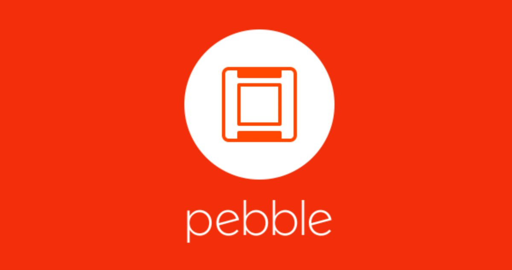
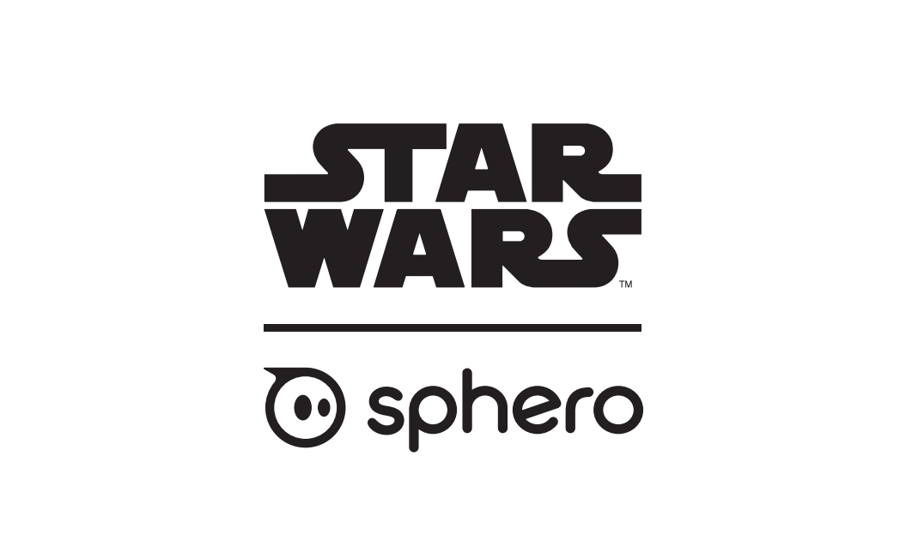
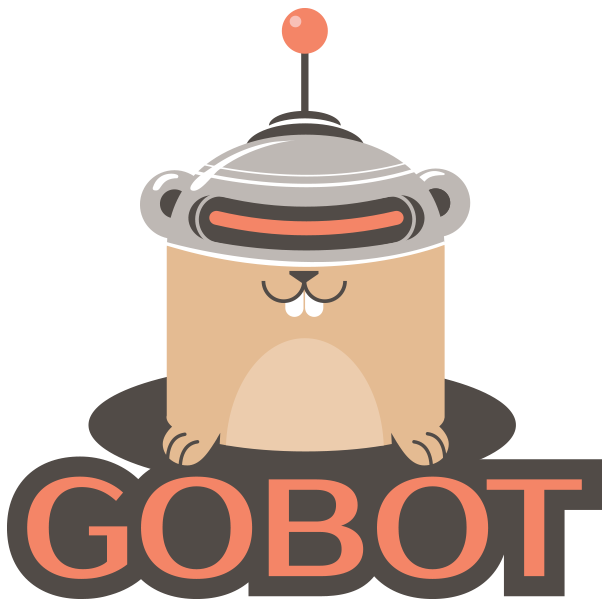
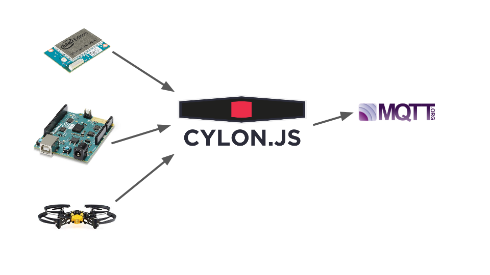
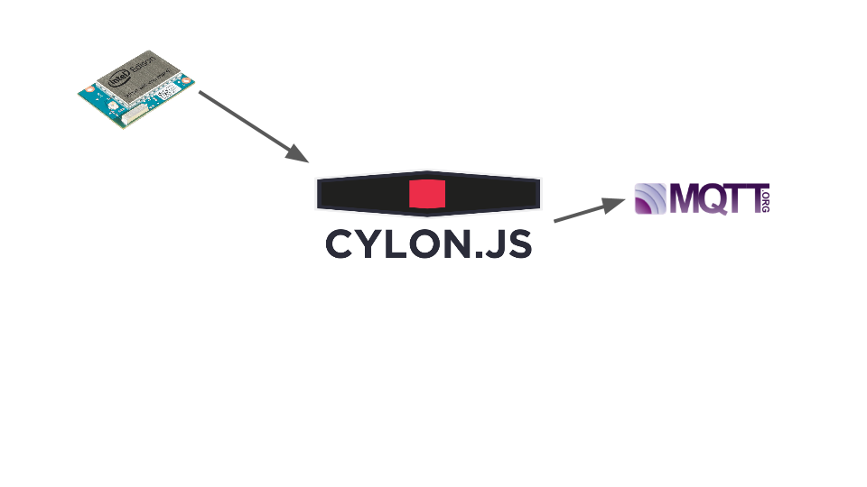
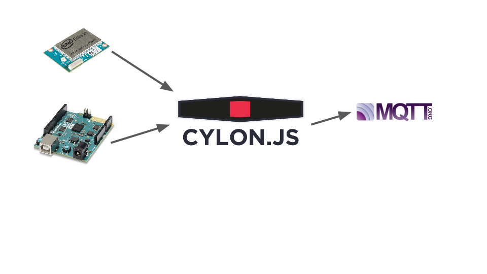

Cómo emplear el Internet de las cosas para los negocios
@deadprogram
¿Si los robots van a quitarnos nuestros trabajos?
Tenemos la tendencia a sobrestimar el efecto de una tecnología
en el corto plazo y subestimar el efecto a largo plazo.
Roy Amara
Buenas tardes
Estamos en el sede de Endesa
Yo soy Ron Evans (@deadprogram)
"El Cabecilla"
@hybrid_group
hybridgroup.com
Clientela


Proyectos
cylonjs.com

gobot.io
Cómo emplear el Internet de las cosas para los negocios
¿Que es el Internet de las Cosas?
Una breve historia de la comunicación Máquina a Máquina (M2M)
Aplicaciones
Cortes o fallos
Eficiencia energética
Eficiencia operativa
Estrategias de mantenimiento
Experiencia del usuario
Estrategias
Busca donde la empresa está en contacto con el mundo real
Utiliza plataformas de hardware libre y código libre
Constituir asociaciones
Empezar aceleradoras e incubadoras
Hacer inversiones
Tácticas
Prototipo en miniatura
"Producto Mínimo Viable"
Construir - Medir - Aprender
Patrocinar "hackathons"
Demostraciónes
Protagonizada
"Hola, mundo" del Internet de las Cosas
Arduino 101
var Cylon = require("cylon");
Cylon.robot({
connections: {
arduino: { adaptor: "firmata", port: "/dev/ttyACM0" }
},
devices: {
led: { driver: "led", pin: 13 }
},
work: function(my) {
every((1).second(), my.led.toggle);
}
}).start();
"Hola, mundo" del Internet de las Cosas, parte 2
Intel Edison
var Cylon = require("cylon");
Cylon.robot({
connections: {
board: { adaptor: "edison" }
},
devices: {
led: { driver: "led", pin: 13 }
},
work: function(my) {
every((1).second(), my.led.toggle);
}
}).start();
Aplicación
"Miniluminado"
Estación de sensores
Estación base
Sistema de reparación

Estación de sensores
Intel Edison + Sensores + MQTT

var Cylon = require("cylon");
Cylon.robot({
connections: {
placa: { adaptor: "intel-iot" },
servidor: { adaptor: "mqtt", host: process.env.SERVIDOR }
},
devices: {
termo: { driver: "temperature-sensor", pin: 0, connection: "placa" },
luz: { driver: "analog-sensor", pin: 1, connection: "placa" },
dial: { driver: "analog-sensor", pin: 2, connection: "placa" }
},
work: function(mi) {
every(100, function() {
var val = mi.termo.celsius();
console.log("termometro valor:", val);
mi.servidor.publish("sensores/termo", val.toString());
});
mi.luz.on("analogRead", function(val) {
console.log("luz valor:", val);
mi.servidor.publish("sensores/luz", val.toString());
});
mi.dial.on("analogRead", function(val) {
console.log("dial valor:", val);
mi.servidor.publish("sensores/dial", val.toString());
});
}
});
Cylon.start();
Estación base
Intel Arduino 101 + LEDs + Robeaux + MQTT

var Cylon = require("cylon");
Cylon.api("http", {
ssl: false,
port: 3000
});
Cylon.robot({
connections: {
placa: { adaptor: "firmata", port: "/dev/ttyACM0" },
servidor: { adaptor: "mqtt", host: process.env.SERVIDOR }
},
devices: {
leds: { driver: "rgb-led", redPin: 3, greenPin: 5, bluePin: 6, connection: "placa" },
termo: { driver: "mqtt", topic: "sensores/termo", connection: "servidor" },
luz: { driver: "mqtt", topic: "sensores/luz", connection: "servidor" },
dial: { driver: "mqtt", topic: "sensores/dial", connection: "servidor" },
drone: { driver: "mqtt", topic: "drones/reparaciones", connection: "servidor" }
},
estrellar: function() {
var mi = this;
mi.estrellando = true;
mi.activado = false;
mi.intermitente = setInterval(function(){
if (mi.activado) {
mi.leds.setRGB("ff00ff");
mi.activado = false;
} else {
mi.leds.setRGB("0000ff");
mi.activado = true;
}
}, 500);
},
work: function(mi) {
mi.leds.setRGB("0000ff");
mi.termo.on("message", function(val) {
console.log("termo:", val.toString());
});
mi.luz.on("message", function(val) {
console.log("luz:", val.toString());
});
mi.dial.on("message", function(val) {
var fuerza = parseInt(val.toString());
console.log("dial:", fuerza);
if (mi.estrellando) return;
if (fuerza < 100) {
mi.leds.setRGB("ff0000");
} else if (fuerza < 500) {
mi.leds.setRGB("ffff00");
} else {
mi.leds.setRGB("00ff00");
}
});
mi.drone.on("message", function(val) {
var estado = val.toString();
console.log("drone:", estado);
if (estado == "despegue") {
mi.estrellar();
} else if (estado == "descenso") {
mi.estrellando = false;
clearInterval(mi.intermitente);
} else {
console.log("nada");
}
});
}
});
Cylon.start();
robeaux.io
Sistema de reparación
Parrot Minidrone + Controlador de DS3 + MQTT
var Cylon = require("cylon");
Cylon.robot({
connections: {
joystick: { adaptor: "joystick" },
minidrone: { adaptor: "rolling-spider", uuid: process.env.ID},
servidor: { adaptor: "mqtt", host: process.env.SERVIDOR }
},
devices: {
controlador: { driver: "dualshock-3", connection: "joystick", description: "ShanWan PS(R) Ga`epad" },
drone: { driver: "rolling-spider", connection: "minidrone" }
},
work: function() {
var mi = this,
rightStick = { x: 0.0, y: 0.0 },
leftStick = { x: 0.0, y: 0.0 },
cmd = {};
mi.controlador.on("triangle:press", function() {
mi.drone.takeOff();
mi.servidor.publish("drones/reparaciones", "despegue")
});
mi.controlador.on("x:press", function() {
mi.drone.land();
mi.servidor.publish("drones/reparaciones", "descenso")
});
mi.controlador.on("square:press", function() {
mi.drone.hover();
});
mi.controlador.on("circle:press", function() {
mi.drone.frontFlip();
});
mi.controlador.on("right_x:move", function(data) {
rightStick.x = data;
});
mi.controlador.on("right_y:move", function(data) {
rightStick.y = data;
});
mi.controlador.on("left_x:move", function(data) {
leftStick.x = data;
});
mi.controlador.on("left_y:move", function(data) {
leftStick.y = data;
});
setInterval(function() {
var tilt = 0,
forward = 0,
turn = 0,
up = 0,
steps = 1;
if (rightStick.y < 0) {
forward = validatePitch(rightStick.y);
} else if (rightStick.y > 0) {
forward = validatePitch(rightStick.y) * -1;
}
if (rightStick.x > 0) {
tilt = validatePitch(rightStick.x);
} else if (rightStick.x < 0) {
tilt = validatePitch(rightStick.x) * -1;
}
if (leftStick.y < 0) {
up = validatePitch(leftStick.y);
} else if (leftStick.y > 0) {
up = validatePitch(leftStick.y) * -1;
}
if (leftStick.x > 0) {
turn = validatePitch(leftStick.x);
} else if (leftStick.x < 0) {
turn = validatePitch(leftStick.x) * -1;
}
cmd.tilt = tilt;
cmd.forward = forward;
cmd.turn = turn;
cmd.up = up;
mi.drone.drive(cmd, steps);
}, 0);
}
}).start();
function validatePitch(data) {
var value = Math.abs(data);
if (value >= 0.1) {
if (value <= 1.0) {
return ((Math.round(value * 100.0) / 100.0) * 100) | 0;
} else {
return (1.0 * 100) | 0;
}
} else {
return 0 ;
}
}